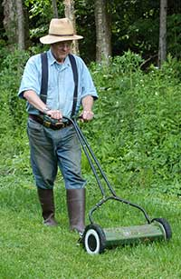

Grow A Beautiful Lawn Without Chemicals Or Fossil Fuels
Tabitha Alterman
June/July 2007
The recent wave of information about climate change, fossil fuel dependence and the ubiquitous presence of toxic chemicals in our environment has inspired many of us to look for greener approaches to the routine things we need to do. This amped-up awareness is increasing the popularity of 'natural' lawns. For most of us, this means eliminating chemical fertilizers, dyes and weed-killers from the lawn's diet. Others have decided to plant drought-tolerant native plants that need less water. Or food-bearing plants, such as strawberries, which cover more of the ground so their lawns require less all-around maintenance. The great news is that you can have a gorgeous, low-maintenance lawn that's safe for your family and our environment.
One inspiring lawn-keeper is Ed Smith, author of The Vegetable Gardener's Bible and Incredible Vegetables from Self-Watering Containers, who is about to embark on a 100 percent fossil fuel-free lawn care plan. Recently, Ed answered a few questions about what motivated him to begin this plan and how it's going to work.
Q. Tell me about your lawn maintenance plan. What made you decide to forgo fossil fuels completely?
A. Most lawn-keepers make their lawns pretty by applying lots of chemical fertilizers, herbicides and pesticides?and irrigating like the dickens. That is, in a nutshell, bad for the earth, for the air, and for water. Too much water used for lawns could be used for drinking or irrigating food crops, and chemicals leach from lawn soil and end up in streams, rivers, lakes and oceans.
I don't use chemicals on my lawn and never have. But until recently I've thoughtlessly used standard operation procedure: gasoline-powered rotary mowers, a riding mower, a couple of push mowers, and a gas-powered weed whacker. My increasing awareness of climate change and peak oil compelled me to ask myself if cutting the lawn that way is OK. It became increasingly difficult to avoid the conclusion that I really should find a better way. I decided to switch from fossil solar energy to here-and-now solar energy: me, combined with electricity from the sun.
Q. What is your lawn like now? What kind of maintenance does it require?
A. It's not one of those Better Homes & Gardens creations. It's just whatever comes up: a mix of grasses and some 'weeds' like dandelions. It requires fairly regular mowing of whatever nature has seen fit to plant around the house, the vegetable and flower gardens, and the fruit trees and berry bushes. There are a lot of rougher, hilly areas. Yeah, you can play croquet on my lawn, but it is a much more interesting and challenging form of the game than you might be used to!
Q. Are you starting cold turkey, or easing into the system one phase at a time? Will you allow any exceptions?
A. The first to go was the riding mower. That tool uses a lot more fuel than a push mower, because it's not just cutting grass, but also carrying its quarter-ton self plus me around. It was in the picture in the first place because the lawn was too big for a push mower alone. So there's the first element in the plan: Make the lawn small enough that I can tend it with appropriate tools. I'll be putting more of the lawn into white clover, which doesn't have to be mowed as much, and low-growing ground covers.
My next step is to replace the remaining gas-eaters with human-powered and/or electric-powered alternatives. My home is completely solar-powered, so all electric implements will be fueled by the sun. The only exception might be the gas-powered weed whacker that I use to trim the tall pasture around my gardens.
Q. So what kinds of equipment will you be using now?
A. 1. Person-powered reel mower. I've been surprised at how effective this tool is, and it's not much more work to push it provided the ground is pretty level. It's not a good option on most of my lawn because it's hilly and humpy, and it isn't effective on grass more than about 3 inches high. For the smaller areas that are fairly level and mowed regularly, this option works.
2. Scythe. Yet another step even farther back in time. I'm talking about the European scythe, not the American ones you still find at garage sales in the hinterlands. With a few ifs, this option will work: If I'm willing to take some time to practice the right swing of the tool. If I'm willing to learn to sharpen it. And if I keep it sharp. According to the fellow from whom I bought my scythe, there actually are 'green landscapers' who make a living cutting urban lawns this way ? no pollution, no noise. And I'm still looking for more options, because I'm not yet skilled enough to do as much lawn as I want this way. So far, like the reel mower, I'm more effective with it on smooth and level lawns.
I already prefer my scythe over the gas-powered weed whacker in spots where the grass is high because I only mow there two or three times a season.
3. Electric rotary mower. I'm about to get at least one battery-electric mower to replace the multiple gas-powered ones I've been relying on for the more difficult parts of my lawn. Along with the change in mowers, I'll be switching to a higher setting, which is better for the grass.
4. Electric weed whackers. I'll use these for trimming in places where the other equipment has trouble.
Q. Have you calculated the cost difference of your fossil-fuel free system versus the methods you currently employ? Do you expect to save money in the long run?
A. The electric equipment will cost more initially but it'll cost less to operate. But 'saving money' is not my motivation for doing this. The real costs of doing lawn maintenance the American way are way more than the monetary ones. I'm going to reduce my costs even if I increase the amount of money I spend.
Q. What about the difference in time? It seems like you'll probably have to spend more time and effort maintaining your lawn this way.
A. I'll probably spend more time, though I may choose to decrease the size of the lawn to a size that will require about the same amount of time I spend now. I do expect the time spent to be more pleasant, though, and far less noisy.
Q. What do you think will be the main benefits of eliminating fossil fuels from your regular lawn maintenance?
A. I'll be doing a small bit to ward off climate change and to get ready for a time when I won't be able to have a lawn if I can't tend it without fossil fuels. And I'll be helping other people do the same. Lawns are a big deal in this country?they cover an area about the size of New York. That's the state, not the city. Things could be different in our world if that New York state-sized lawn were tended without fossil fuels.
To learn more about time-tested ways to keep a natural, healthy, beautiful, chemical-free lawn, your best bet is Paul Tukey's excellent and comprehensive book, The Organic Lawn Care Manual.
To learn more about non-polluting lawn equipment, check out these articles from the Mother Earth News archive:
Do you have a natural lawn? Share your maintenance plan with our readers by using the comments section below. And if your 'alternative lawn' has met with criticism from neighbors or homeowners' associations, we'd love it if you shared those stories, too.
|
 Sylvia Ferry Smith Ed Smith enjoys mowing the lawn with his non-polluting, noiseless reel mower |
 Sylvia Ferry Smith Ed practices his technique with a 'fossil fuel-free' European scythe. The scythe is a perfect tool for trimming tall grass. |
|